Les Insurgés
des déchets


 



Les Insurgés
des déchets


1 Sensibiliser lors d'événements thématiques en tant qu'association écocitoyenne luttant contre les pollutions humaines.
La protection de la nature semble de plus en plus présente au sein des conversations mais malheureusement tout le monde n’agit pas toujours de manière éco-responsable dans son quotidien. C’est pourquoi, participer à des rencontres de ce type peut être un moyen de faire prendre conscience à chacun de leur empreinte environnementale et d’agir dessus de manière ludique et instructive.

18 juillet : Participation à La journée du littoral et de la mer à Bourcefranc-Le Chapus
Notre stand avec en figure de proue le mannequin de Mimi vêtu de masques récupérés dans la nature, nettoyés, traités et cousus.
Crédit photo : Delphine Basset.
18 juillet : Participation à La journée du littoral et de la mer à Bourcefranc-Le Chapus
Notre Présidente et Mimi en pleine interview.
Crédit photo : Frank Symington.
18 juillet : Participation à La journée du littoral et de la mer à Bourcefranc-Le Chapus
Une création originale pour dénoncer l'amoncelllement croissant de détritus sur nos plages.
Crédit photo : Frank Symington.
18 juillet : Participation à La journée du littoral et de la mer à Bourcefranc-Le Chapus
Laure & Mimi, accompagnés par 2 membres de l'association "Les animations iodées", ont effectué le tri des déchets de repas lors de cette journée.
Crédit photo : Raphaël Couillaud.
18 juillet : Participation à La journée du littoral et de la mer à Bourcefranc-Le Chapus
Un aquarium remplit de déchets était présenté sur le stand afin de marquer les esprits.
Crédit photo : Frank Symington.
18 juillet : Participation à La journée du littoral et de la mer à Bourcefranc-Le Chapus
Le maire de Bourcefranc-le-Chapus, M. Guy PROTEAU, est venu nous apporter son soutien sur le stand. Il est entouré des membres de l'association.
Crédit photo : Philippe Jerome.
2 Sensibiliser un maximum de monde autour d'un événement généraliste
Aller à la rencontre du public, c'est aussi, à un moment ou à un autre, la vocation d'une association écocitoyenne. Ces campagnes ont pour objectif de marquer les esprits pour mobiliser un maximum de personnes et ainsi informer et sensibiliser sur l'abandon des déchets sur la voie publique.

14 juillet : Battle Écocitoyenne à La Rochelle au cours des Francofolies
Clément Chapel de l'association Ploggathon, Veronika Tornade notre handi-ploggeuse et Mimi sur le vieux port de La Rochelle. Ils arborent les créations de notre ambassadrice.
Crédit photo : Delphine Basset.
14 juillet : Battle Écocitoyenne à La Rochelle au cours des Francofolies
Clément Chapel de l'association Ploggathon, Veronika Tornade notre handi-ploggeuse et Mimi face à face avec les tours du vieux port de La Rochelle
Crédit photo : Delphine Basset.
14 juillet : Battle Écocitoyenne à La Rochelle au cours des Francofolies
Mimi a remis à M. Mickaël Duchemin de Dompierre sur mer un sac de canettes ramassées sur la voie publique afin qu'il puisse les remettre à l'association KnetPartage.
Crédit photo : Delphine Basset.
14 juillet : Battle Écocitoyenne à La Rochelle au cours des Francofolies
Clément Chapel est président de l'association "Ploggathon". Il effectue, à vélo, ce qu'il a appelé le "Trash Summer Tour". À ce jour, il en est à près de 2 000 km, 100 kg de déchets dont 300 masques, des centaines de personnes sensibilisées dont une cinquantaine d’enfants et plus de 150 spots de dépôts sauvages identifiés.
Crédit photo : Delphine Basset.
14 juillet : Battle Écocitoyenne à La Rochelle au cours des Francofolies
Mimi en pleine action "sensibilisation" reproduisant le logo de notre association gr√¢ce √† ses deux pinces √† d√©chets. üòÉ
Crédit photo : Delphine Basset.
3 Sensibiliser en lançant des initiatives avec les municipalités
Notre association souhaite porter la voix des écocitoyens sensibles à la pollution humaine en contribuant aux objectifs d’optimisation des municipalités dans leur gestion des déchets. Repérage de déchetteries sauvages, implantation de bacs à marée, distribution de cendriers de plage, diffusion de messages de sensibilisation, toutes ces initiatives ont l'écho des municipalités.
Crédit photo : Delphine Basset.
Été 2021 - Partenariat Ville de Marennes
Après plusieurs réunions fructueuses avec les équipes de la Ville de Marennes, nous avons eu le grand honneur de pouvoir customiser les bacs à marée bientôt installés à Marennes Plage.
Crédit photo : Delphine Basset.
Été 2021 - Partenariat Ville de Marennes
Les bacs à marée permettent de collecter des macro-déchets rejetés par la mer et sont aussi un bon indicateur de pollution.
Crédit photo : Delphine Basset.

Été 2021 - Partenariat Ville de Marennes
La signalétique créée par nos soins figure sur les deux bacs de manière à informer les citoyens sur les déchets acceptés ou non.
Crédit photo : Delphine Basset.
Été 2021 - Partenariat Ville de Marennes
Notre logo poché sur les deux bacs. Trop de promeneurs semblent rester indifférents aux déchets rejetés par la mer. Une réelle prise de conscience collective doit s’imposer et nous participerons à cela.
Crédit photo : Raphaël Couillaud.
Été 2021 - Partenariat Ville de Marennes
L'inauguration aura bient√¥t lieu üçæüçæ. Nous vous tiendrons inform√©s sur les r√©seaux sociaux.
Crédit photo : Delphine Basset.
4 Sensibiliser par des ateliers artistiques de revalorisation des déchets
De la récup’ à l’art, il n'y a qu'un pas et nous l'avons franchi. Dès cet été, notre association a débuté de nouvelles activités de sensibilisation à la réduction des déchets et à la préservation de l’environnement en développant des ateliers DIY (ou « fait maison ») à la portée de tous et toutes !
Bracelets en opercules de canettes recyclées
Réalisés par Sabine avec des canettes récupérées lors de nos ramassages.
Crédit photo : Sabine Mallet.

Mobiles ostréicoles
Réalisés par Caroline Chanel avec les déchets ostréicoles rejetés par la mer et retrouvés lors de ramassages sur les plages.
Crédit photo : Caroline Chanel.

Sacs cabas en dosettes de café
Réalisés par Caroline Chanel avec des paquets de dosettes transformés et assemblés pour décorer ce joli sac cabas.
Crédit photo : Caroline Chanel.

Cendriers de poche en brique de lait
Pour ne plus jeter vos mégots, vous avez juste d'une brique alimentaire (lait, jus de fruit...) nettoyée, d'une paire de ciseaux et d'un peu de technique !
Crédit photo : Delphine Basset.

Fleurs canette
De jolies fleurs pour décorer et apporter de la couleur au jardin tout au long de l'année. Réalisées par Sabine avec des canettes récupérées lors de nos ramassages.
Crédit photo : Sabine Mallet.

La robe "Mallet"
Réalisée par Sabine Mallet et sa maman, Liliane, qui du haut de ses 80 ans ont conçu cette magnifique tenue à base de briques de lait.
Crédit photo : Delphine Basset.